Buscar

Descubre la Diversidad de la Vida Animal:
Desde los majestuosos felinos que deambulan por las selvas hasta las majestuosas aves rapaces que dominan los cielos, exploramos la riqueza de la biodiversidad que nos rodea. Conoce las historias sorprendentes detrás de estos habitantes de la naturaleza, sus comportamientos únicos y sus asombrosas adaptaciones.
Viaja a Distintos Rincones del Planeta:
Te llevaremos en un recorrido por diferentes ecosistemas, desde las vastas llanuras africanas hasta las profundidades de la selva amazónica. A través de imágenes impactantes y relatos cautivadores, te sumergirás en la vida de animales que luchan por sobrevivir en entornos desafiantes.
Conciencia y Conservación:
A medida que exploras la vida salvaje, también destacamos la importancia de la conservación y la protección de estos tesoros naturales. Descubre cómo puedes contribuir a preservar estos ecosistemas y asegurar un futuro sostenible para las generaciones venideras.
Únete a la Aventura:
Ya sea que seas un amante de la naturaleza experimentado o simplemente estés comenzando tu viaje de descubrimiento, "Animales Salvajes" te invita a unirte a nosotros en esta emocionante aventura. Nuestra misión es inspirarte, educarte y acercarte a la asombrosa biodiversidad que nos rodea.